Share a profile as a link
Send a link or a .mortar file. Whoever opens it gets the same mods, downloaded from each mod's own page.
Mortar installs your game's mod loader, keeps every playthrough's mods in its own profile, tells you why something broke before you launch, and shares a whole profile as a link. The games come from Mortar's catalog: Stardew Valley, Lethal Company and Valheim.
Windows installer, AppImage, Flatpak, .deb, .rpm and Arch packages
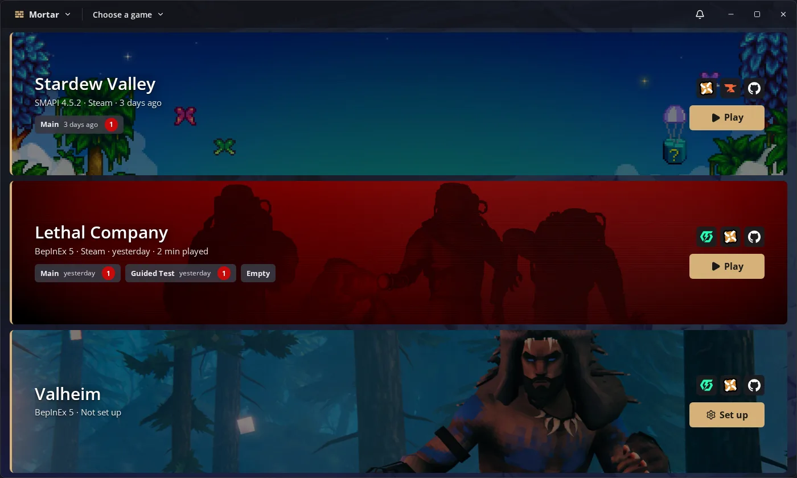
Features
Hundreds of mods, several playthroughs, friends on the same pack. Mortar is made for that setup, not just the first five mods.
Keep a vanilla-plus farm, a Stardew Valley Expanded run and the pack your Lethal Company crew plays side by side. Each profile has its own mods, settings and launch options, and switching is one click.
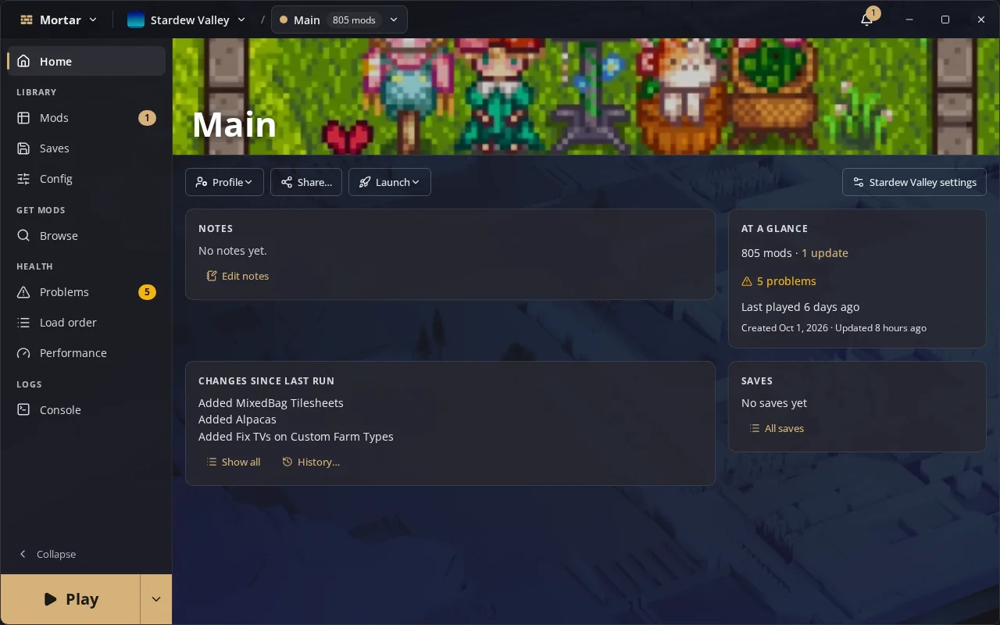
Mortar installs SMAPI and keeps it up to date, and handles a profile of hundreds of mods with cover art, groups and filters. Each game keeps its own loader, mod sites and settings, so switching games is one click on Game select.
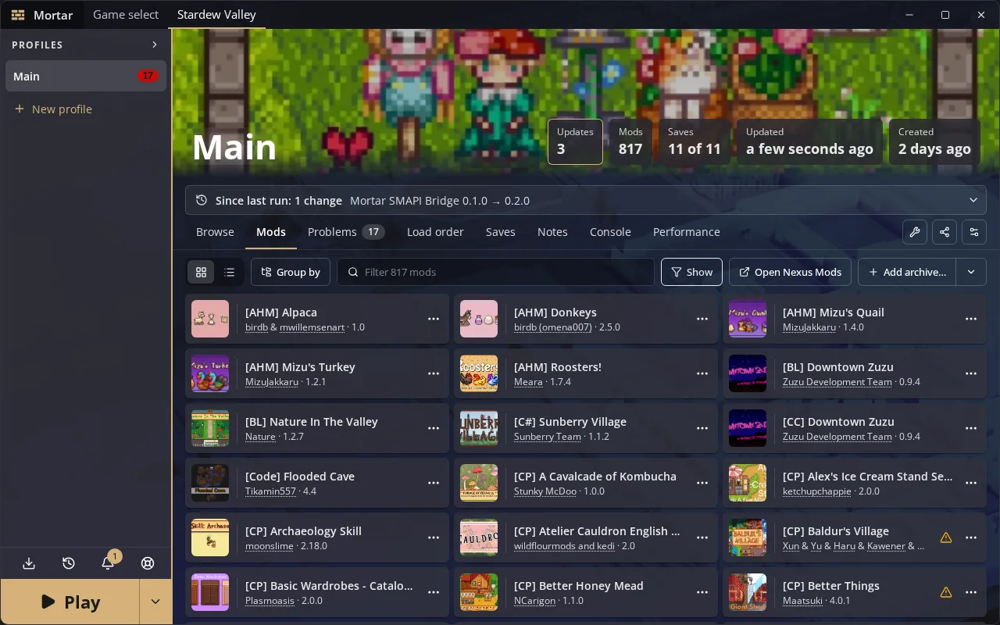
Mortar installs the BepInEx pack each game needs and keeps every Thunderstore package in the profile, not the game folder. At launch it places BepInEx beside the game and takes it back when the game exits. On Linux, Valheim's native build runs modded without Proton.
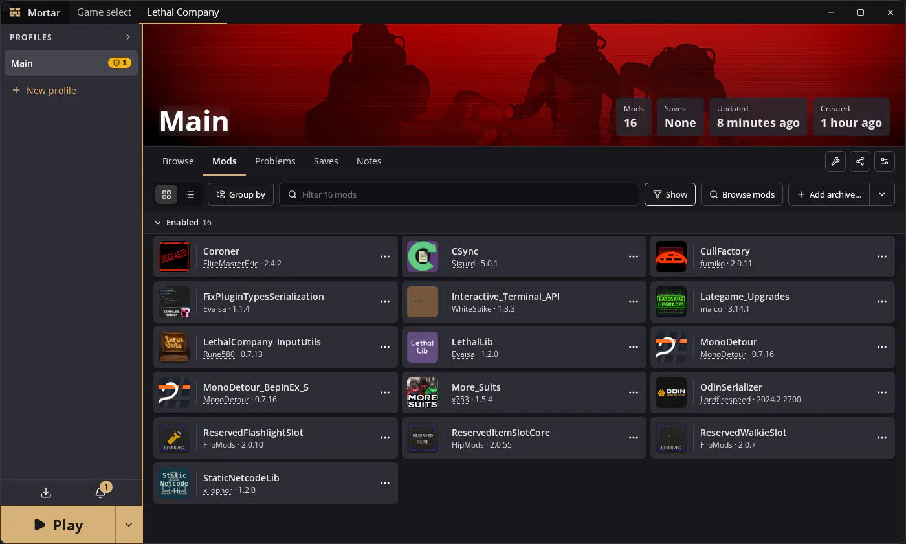
Browse searches every mod site the game uses at once. Add a Thunderstore package and the packages it depends on come with it.
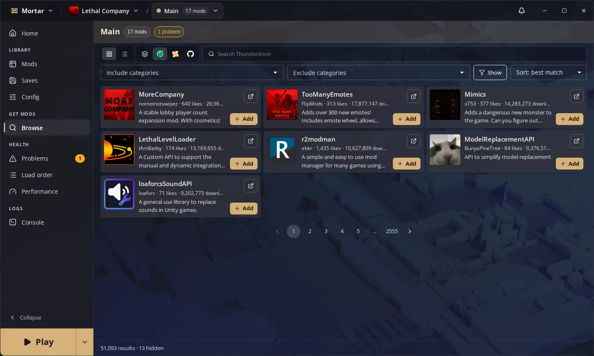
Mortar reads every mod's manifest, Content Patcher packs and the loader's log, then explains problems in plain words: missing dependencies, outdated versions and which mod wins each content conflict.
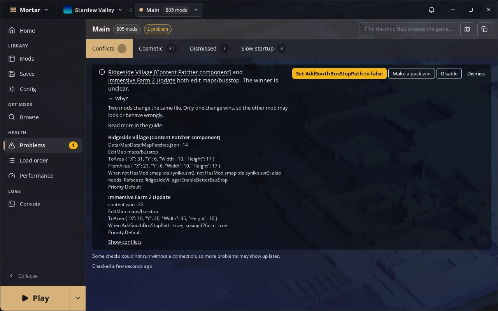
In Stardew Valley, the bundled SMAPI bridge lets Mortar measure how long the game takes to reach the title screen and what each mod costs along the way, so a slow load has a name.
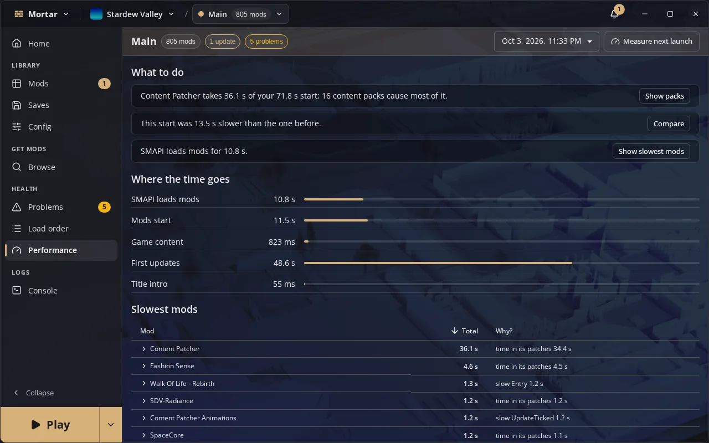
Add a profile to Steam and start it from Game Mode like any other game. Mortar stays out of sight while the game starts, shows a dialog only when something needs an answer, and closes with the game so Steam counts your playtime.
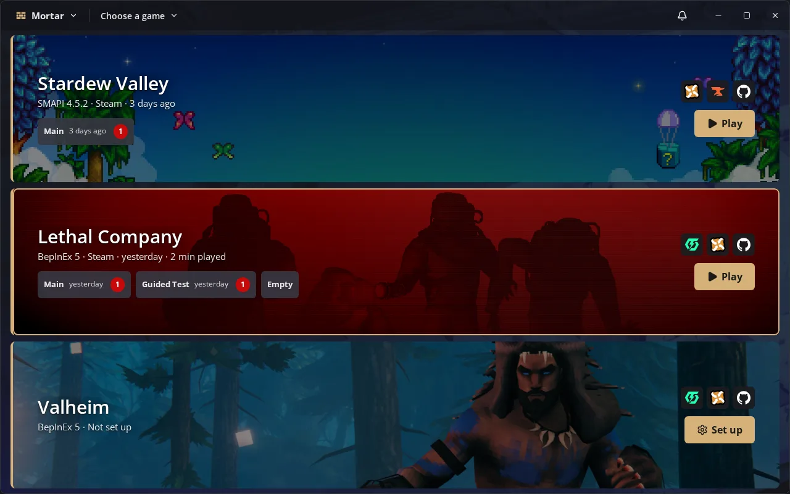
Pair two of your own computers with a short code. A profile you send from one to the other arrives with its mod files, from every source, so nothing downloads twice. No account is involved.
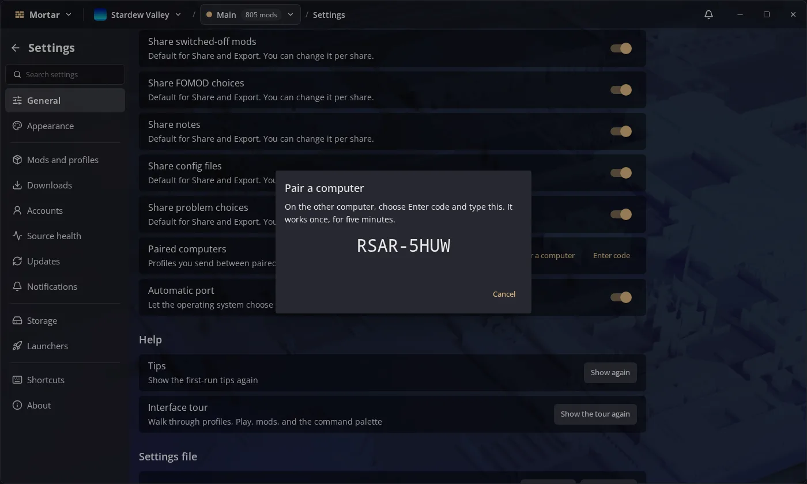
Dark or light, eight accent colours, and your own image, your desktop wallpaper or a solid colour behind the window.
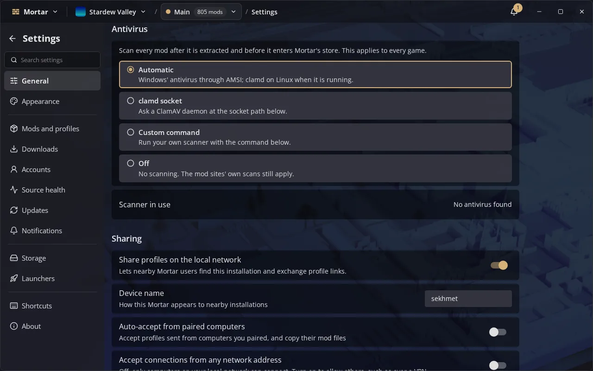
And more
The small things that save an evening of troubleshooting.
Send a link or a .mortar file. Whoever opens it gets the same mods, downloaded from each mod's own page.
Click the button on Nexus Mods and the file lands in the right profile. Works with free Nexus accounts.
Import a collection with its FOMOD choices, bundled configs and instructions intact.
Scheduled and manual backups of every save, with restore, pinning and a size you control.
Keep a mod on the version that works for your save while everything else updates.
Mortar checks stored mod files against what it saved and repairs anything that changed.
Send a profile to another computer on your network, mod files included when it's your own.
Search Nexus Mods, GitHub, Thunderstore and more in one list, as each game uses them. Mods you already have are marked, and every download still comes from the mod's own page.
Show a code on one computer, type it on the other, and they trust each other from then on. Profiles you send between them can skip the downloads, with no account involved.
Point Mortar at a folder that Syncthing, Dropbox or a NAS already carries around. Your profiles follow you to other machines, and a change from another PC is offered to you, never merged on its own.
List games, mods and conflicts from a terminal, with JSON output for scripts.
Mortar updates in place, or through apt, dnf and pacman from its own signed package repository.
Companions
Two optional add-ons, both open source, both installed from inside Mortar.
Marks Nexus Mods and Thunderstore package pages with what your profile already has and hands downloads and installs to Mortar. For Firefox, Chrome, Edge and other Chromium browsers.
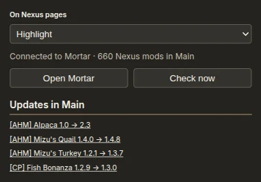
A small mod Mortar adds to each profile. In Stardew Valley it runs console commands sent from Mortar, exposes Generic Mod Config Menu settings, records startup timings and drives an overlay for streaming. In Lethal Company and Valheim it tells Mortar which plugins the running game loaded.
Download
Free, no account needed. Your current version is always on the releases page.
Windows 10 and 11. Installs for your user, no administrator rights needed.
Download installer (x64)
x86_64 and ARM64. Ubuntu 24.04, Debian 13, Fedora 39 or newer; the
Flatpak runs anywhere. Mark the AppImage executable
(chmod +x) and run it.
Distribution-specific steps, ARM builds and the browser extension: all downloads.
FAQ
Yes. Mortar is free and open source under the AGPL-3.0 licence, with no account, ads or tracking in the app.
No. With a free Nexus account you click Mod Manager Download on a mod's page and Mortar takes it from there. Premium members can also download from inside Mortar.
No. Every mod downloads from its own page on Nexus Mods, GitHub or Thunderstore, so authors keep their downloads and endorsements. The one exception is sending a profile to another of your own computers on your network.
Stardew Valley, Lethal Company and Valheim, from Steam (including Flatpak Steam), GOG, Heroic and Lutris. Mortar is built for many games, and more are on the way.
Yes. In Desktop Mode, download the AppImage and run it. Open a profile's menu, choose Add to Steam, and the profile shows up in Game Mode. The Flatpak cannot add itself to Steam, so the AppImage is the one to use on the Deck.
Yes. The Windows builds are not code-signed yet, so SmartScreen warns the first time. Choose More info, then Run anyway. The source and the release builds are public on GitHub.
Every release is built from the public source by GitHub Actions. The package repositories, Flatpak repository and each release's checksums are signed with the Mortar packages key, and Mortar checks a signature on every update before installing it. The code signing policy shows how to check a file yourself.
Concrete, our Lethal Company mod manager, is archived. Mortar is its successor, rebuilt from scratch for several games.
Use Report a Mortar bug in the app's help menu, which attaches diagnostics, or open an issue on GitHub.